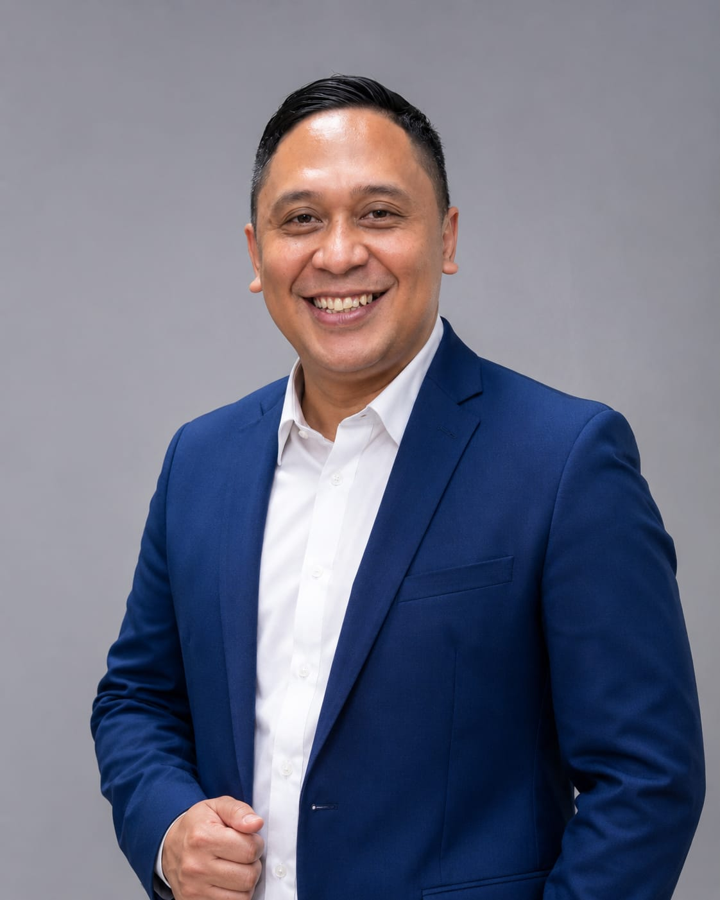

Wujudkan impian beribadah ke Tanah Suci dengan cara yang lebih terencana, aman, berkah, dan sesuai prinsip Syariah.
KONSULTASI GRATIS VIA WA
"Selamat datang di program Istikmal Syariah. Berangkat ke Baitullah bukan sekadar soal memiliki uang tunai saat ini, melainkan tentang seberapa kuat niat (Azzam) dan bagaimana kita merencanakannya secara disiplin. Mari wujudkan panggilan Allah ini bersama bimbingan dan sistem yang tepat."
Dari 4 cara ke Baitullah (Tunai, Pembiayaan, Menabung sendiri, atau Menabung Terencana), program ini hadir dengan menyisihkan dana secara disiplin sebesar Rp500.000 per bulan selama 5 tahun.
Memadukan Investment (investasi syariah), Insurance (perlindungan jiwa syariah di bawah pengawasan OJK & DPS), serta Income (peluang bisnis untuk percepatan dana umrah).
Hanya dengan modal pendaftaran ringan dan mengajak mitra, Anda bisa menikmati sistem komisi, bonus referensi, bonus elit, hingga jenjang karier untuk melipatgandakan hasil.
"Alhamdulillah, sistem Istikmal Syariah ini sangat mudah diterima masyarakat karena kejelasannya. Walau 1 bulan ini saya lebih banyak gerilya secara offline, alhamdulillah sukses tembus 100 polis dan resmi meraih posisi Leader Entrepreneur. Sekarang waktunya kita percepat secara online!"